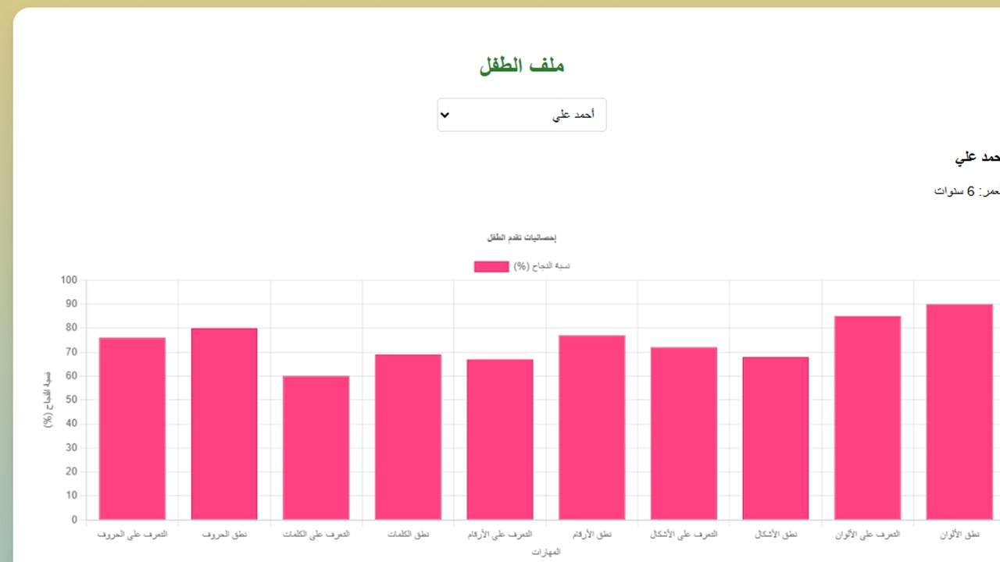
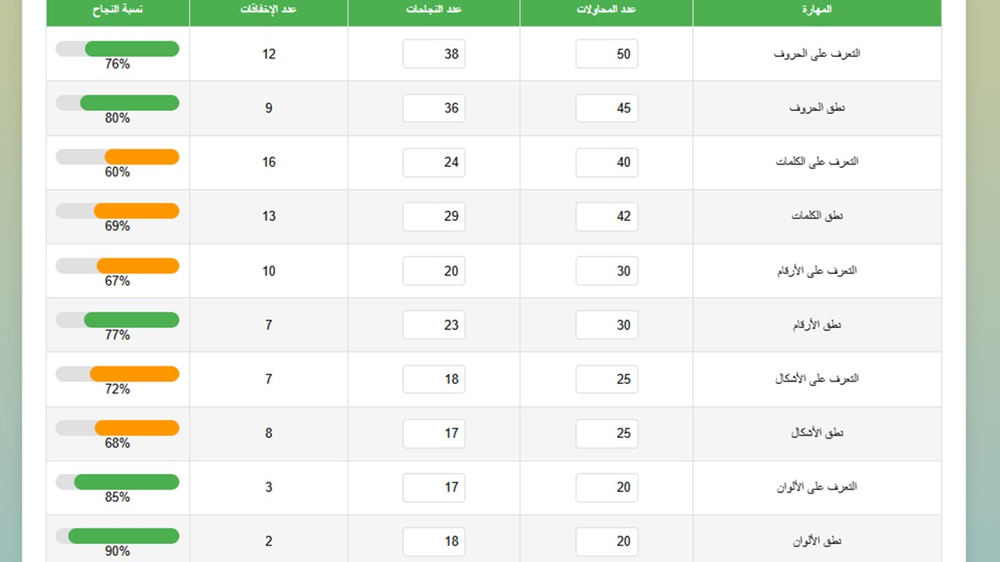

Un suivi précis pour chaque enfant
Innokid collecte des données en temps réel pour offrir aux parents et aux experts pédagogiques une vision claire de l’évolution linguistique.
Pas de jugement, juste des encouragements personnalisés et des rapports exploitables.
0
Mots maîtrisés
0
Sessions jouées
45%
Précision moyenne
10.2h
Temps de jeu
Progression hebdomadaire
Maîtrise par catégorie
Pour les parents
- Rapports hebdomadaires envoyés par email
- Alertes personnalisées : "Ahmed a appris 12 nouveaux mots !"
- Comparaison bienveillante avec la moyenne d’âge
- Export PDF pour les enseignants ou orthophonistes


Pour les experts & enseignants
- Données brutes exportables (CSV, JSON)
- Analyse phonétique détaillée
- Suivi multi-enfants (classe, mosquée)
- Recommandations pédagogiques IA
Exemple de parcours d’apprentissage
Semaine 1 Découverte
Premiers lettre : أ، ب، ت
Semaine 3 Construction
Premiers mots : كتاب، مدرسة، الماء
Semaine 6 Prononciation
Dialogue spontané avec l’IA
Semaine 12 Construction de mots
Possibilité de Lecture fluide de mots et textes